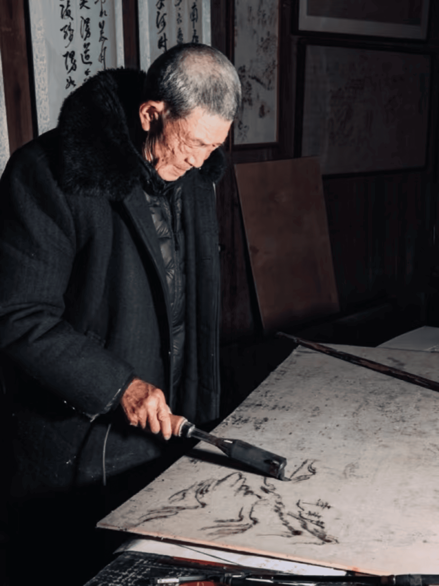
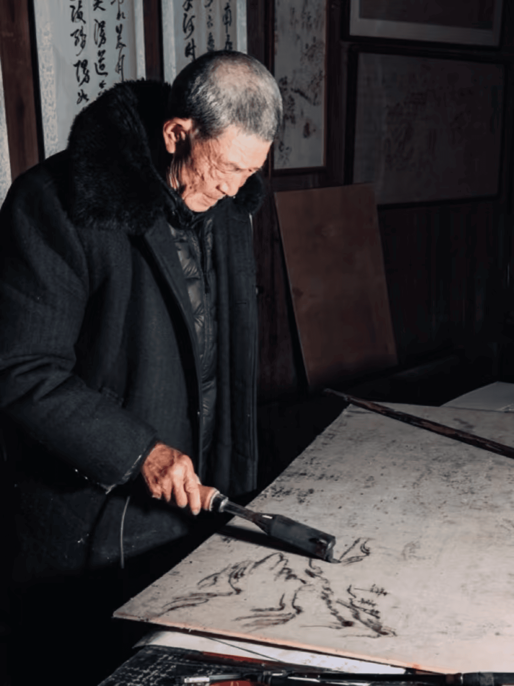

铁笔生花，烙绘传奇
|  |
直播介绍铁笔生花，烙绘传奇 —— 直播直击烙画艺术的诞生 当炽热的烙铁触碰木板，青烟袅袅升起，一幅画卷便在焦香中徐徐展开。是壮阔的山河盛景，还是灵动的飞禽走兽？是典雅的古典仕女，还是奇幻的神话仙境？ 就在此刻，开启一场别开生面的烙画艺术之旅！ 无论您是热爱艺术的追光者，还是对传统手工艺充满好奇的探索者，亦或是渴望在喧嚣尘世中寻得一片宁静艺术天地的心灵旅者，这场烙画制作直播都将带您走进一个充满魅力与惊喜的艺术世界，感受烙画艺术的独特魅力与无尽韵味。 |

|  |
直播介绍铁笔生花，烙绘传奇 —— 直播直击烙画艺术的诞生 当炽热的烙铁触碰木板，青烟袅袅升起，一幅画卷便在焦香中徐徐展开。是壮阔的山河盛景，还是灵动的飞禽走兽？是典雅的古典仕女，还是奇幻的神话仙境？ 就在此刻，开启一场别开生面的烙画艺术之旅！ 无论您是热爱艺术的追光者，还是对传统手工艺充满好奇的探索者，亦或是渴望在喧嚣尘世中寻得一片宁静艺术天地的心灵旅者，这场烙画制作直播都将带您走进一个充满魅力与惊喜的艺术世界，感受烙画艺术的独特魅力与无尽韵味。 |